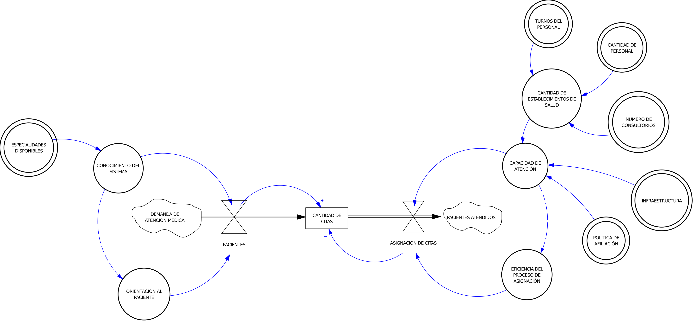

Desconocimiento del establecimiento asignado
Casi la mitad de usuarios no sabe a qué posta le corresponde
Resultado
acuden al centro equivocado.
Enfoque Sistémico en la solución de citas médicas en los centros de salud de Barranca.
La congestión en las citas médicas no es un evento aislado. Es un fenómeno sistémico.
Casi la mitad de usuarios no sabe a qué posta le corresponde
Resultado
acuden al centro equivocado.
La web del MINSA/SIS no coincide con la realidad operativa
Resultado
aumenta la incertidumbre.
Cada establecimiento opera con datos incompletos
Resultado
retroalimentación débil del sistema.
Colas desde la madrugada, información fragmentada, trámites lentos.
Resumen con cifras oficiales (INEI / MINSA / Hospital). Útil para dimensionar la propuesta.
Provincia de Barranca (INEI / proyecciones)
habitantes aprox.
2 Hospitales y 39 establecimientos de salud
Personal en Centro de Salud Laurima
registrados

Las demoras no surgen por un único motivo. Nacen de un conjunto de interacciones entre variables que se refuerzan mutuamente dentro de la red de salud.
Las demoras nacen de estas cuatro variables:
Esta es una propuesta conceptual, no un software terminado. Su objetivo es mostrar cómo un sistema bien integrado puede reducir la congestión y mejorar la atención médica en la provincia.
Identificación automática según DNI.
Asignación en tiempo real y sin colas.
Guía clara y accesible.
Alertas automáticas por SMS/WhatsApp.
Información útil para re-sectorización.
| Taiwán | Propuesta Barranca |
|---|---|
| Carnet con chip | DNI |
| Infraestructura nacional | Infraestructura local |
| App consolidada | Prototipo conceptual |
| Presupuesto millonario | Solución económica |
“No copiamos un modelo; lo adaptamos a nuestra realidad.”
Tiempo de espera
Uso de postas
Consultas innecesarias
Usuarios orientados
Basado en la teoría de Peter Senge sobre sistemas que aprenden.
Modelos causales inspirados en Jay Forrester.
Sustentado en legislación peruana y análisis internacional.
Un sistema de salud sostenible no se logra con más personal o más ventanillas.
Se logra cuando toda la red comparte información, cuando los pacientes están orientados
y cuando las decisiones se toman con datos reales.
Barranca Salud no es solo una app: es una propuesta para que la red de salud
funcione como un sistema integrado.